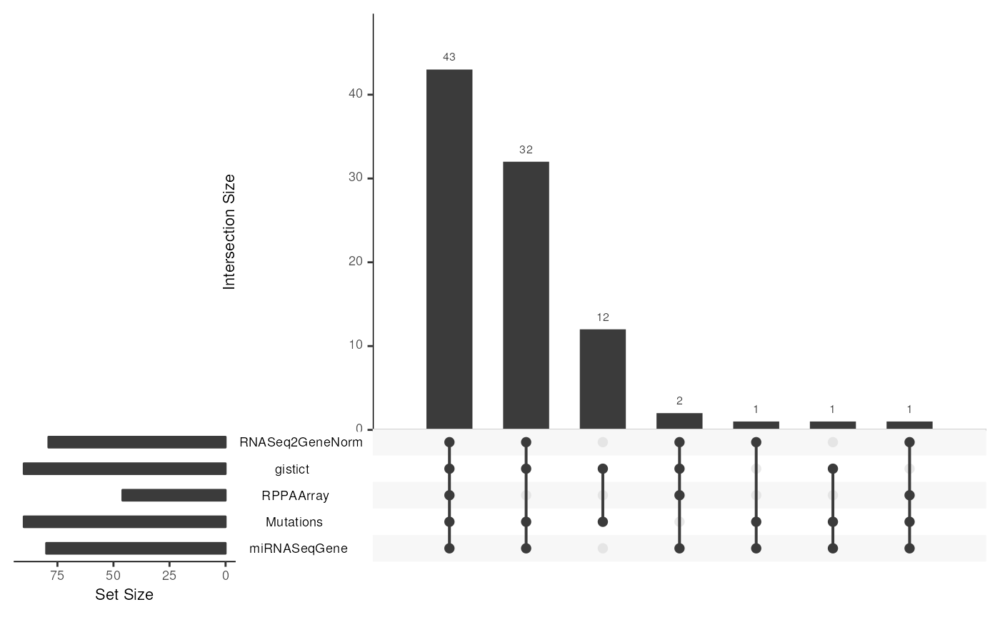
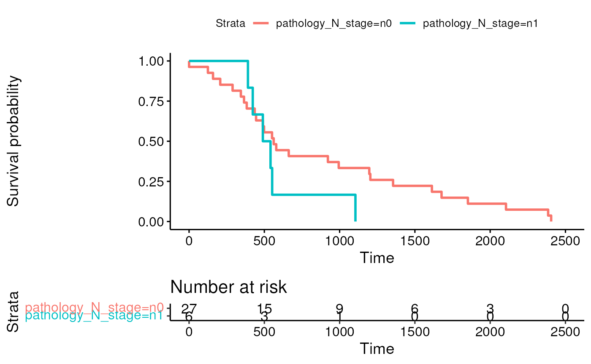
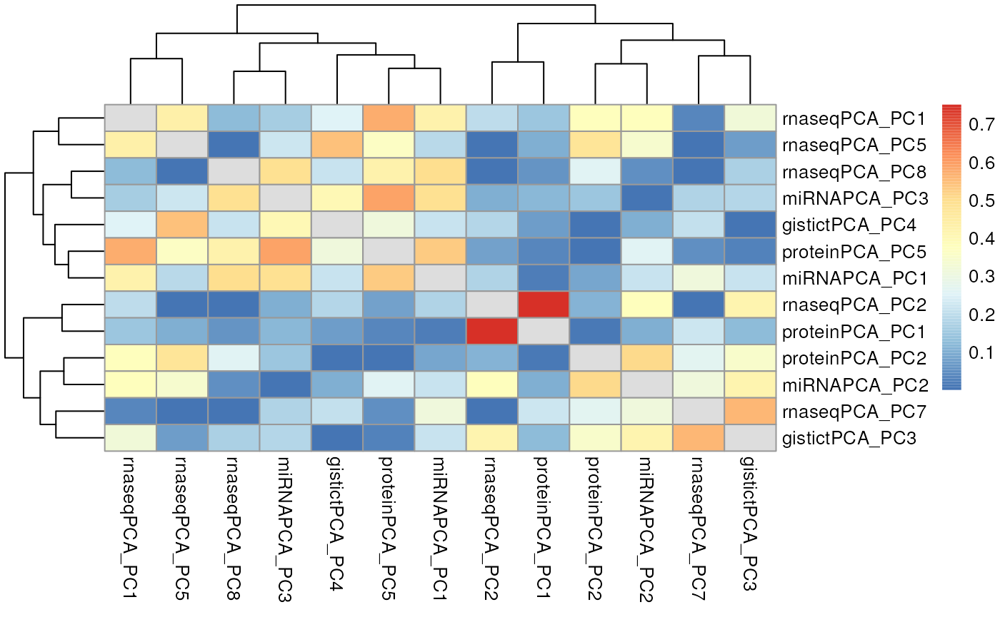

vignettes/MultiAssayExperiment_Analysis.Rmd
MultiAssayExperiment_Analysis.RmdThese provide exercises and solutions using the miniACC
dataset.
miniACC samples have data for each combination
of assays?
Solution
The built-in upsetSamples creates an “upset” Venn
diagram to answer this question:
data("miniACC")
upsetSamples(miniACC)
In this dataset only 43 samples have all 5 assays, 32 are missing reverse-phase protein (RPPAArray), 12 have only mutations and gistict, 2 are missing Mutations, 1 is missing gistict, etc.
Create a Kaplan-meier plot, using pathology_N_stage as a stratifying variable.
Solution
The colData provides clinical data for things like a Kaplan-Meier plot for overall survival stratified by nodal stage.
Surv(miniACC$days_to_death, miniACC$vital_status)## [1] 1355 1677 NA+ 423 365 NA+ 490 579 NA+ 922 551 1750
## [13] NA+ 2105 NA+ 541 NA+ NA+ 490 NA+ NA+ 562 NA+ NA+
## [25] NA+ NA+ NA+ NA+ 289 NA+ NA+ NA+ 552 NA+ NA+ NA+
## [37] 994 NA+ NA+ 498 NA+ NA+ 344 NA+ NA+ NA+ NA+ NA+
## [49] NA+ NA+ NA+ NA+ NA+ 391 125 NA+ 1852 NA+ NA+ NA+
## [61] NA+ NA+ NA+ NA+ 1204 159 1197 662 445 NA+ 2385 436
## [73] 1105 NA+ 1613 NA+ NA+ 2405 NA+ NA+ NA+ NA+ NA+ 207
## [85] 0 NA+ NA+ NA+ NA+ NA+ NA+ 383And remove any patients missing overall survival information:
miniACCsurv <-
miniACC[, complete.cases(miniACC$days_to_death, miniACC$vital_status), ]
miniACCsurv## A MultiAssayExperiment object of 5 listed
## experiments with user-defined names and respective classes.
## Containing an ExperimentList class object of length 5:
## [1] RNASeq2GeneNorm: SummarizedExperiment with 198 rows and 28 columns
## [2] gistict: SummarizedExperiment with 198 rows and 33 columns
## [3] RPPAArray: SummarizedExperiment with 33 rows and 14 columns
## [4] Mutations: matrix with 97 rows and 33 columns
## [5] miRNASeqGene: SummarizedExperiment with 471 rows and 29 columns
## Functionality:
## experiments() - obtain the ExperimentList instance
## colData() - the primary/phenotype DataFrame
## sampleMap() - the sample coordination DataFrame
## `$`, `[`, `[[` - extract colData columns, subset, or experiment
## *Format() - convert into a long or wide DataFrame
## assays() - convert ExperimentList to a SimpleList of matrices
## exportClass() - save data to flat files
fit <- survfit(
Surv(days_to_death, vital_status) ~ pathology_N_stage,
data = colData(miniACCsurv)
)
ggsurvplot(fit, data = colData(miniACCsurv), risk.table = TRUE)
Choose the EZH2 gene for demonstration. This subsetting will drop assays with no row named EZH2:
wideacc = wideFormat(miniACC["EZH2", , ],
colDataCols=c("vital_status", "days_to_death", "pathology_N_stage"))## harmonizing input:
## removing 216 sampleMap rows not in names(experiments)## DataFrame with 6 rows and 7 columns
## primary vital_status days_to_death pathology_N_stage
## <character> <integer> <integer> <character>
## 1 TCGA-OR-A5J1 1 1355 n0
## 2 TCGA-OR-A5J2 1 1677 n0
## 3 TCGA-OR-A5J3 0 NA n0
## 4 TCGA-OR-A5J4 1 423 n1
## 5 TCGA-OR-A5J5 1 365 n0
## 6 TCGA-OR-A5J6 0 NA n0
## RNASeq2GeneNorm_EZH2 gistict_EZH2 y
## <numeric> <numeric> <Surv>
## 1 75.8886 0 1355:1
## 2 326.5332 1 1677:1
## 3 190.1940 1 NA:0
## 4 NA -2 423:1
## 5 366.3826 1 365:1
## 6 30.7371 1 NA:0Perform a multivariate Cox regression with EZH2 copy number (gistict), log2-transformed EZH2 expression (RNASeq2GeneNorm), and nodal status (pathology_N_stage) as predictors:
coxph(
Surv(days_to_death, vital_status) ~
gistict_EZH2 + log2(RNASeq2GeneNorm_EZH2) + pathology_N_stage,
data=wideacc
)## Call:
## coxph(formula = Surv(days_to_death, vital_status) ~ gistict_EZH2 +
## log2(RNASeq2GeneNorm_EZH2) + pathology_N_stage, data = wideacc)
##
## coef exp(coef) se(coef) z p
## gistict_EZH2 -0.03723 0.96345 0.28205 -0.132 0.894986
## log2(RNASeq2GeneNorm_EZH2) 0.97731 2.65729 0.28105 3.477 0.000506
## pathology_N_stagen1 0.37749 1.45862 0.56992 0.662 0.507743
##
## Likelihood ratio test=16.28 on 3 df, p=0.0009942
## n= 26, number of events= 26
## (66 observations deleted due to missingness)We see that EZH2 expression is significantly associated with overal survival (p < 0.001), but EZH2 copy number and nodal status are not. This analysis could easily be extended to the whole genome for discovery of prognostic features by repeated univariate regressions over columns, penalized multivariate regression, etc.
For further detail, see the main MultiAssayExperiment
vignette.
Part 1
For all genes where there is both recurrent copy number (gistict assay) and RNA-seq, calculate the correlation between log2(RNAseq + 1) and copy number. Create a histogram of these correlations. Compare this with the histogram of correlations between all unmatched gene - copy number pairs.
Solution
First, narrow down miniACC to only the assays
needed:
subacc <- miniACC[, , c("RNASeq2GeneNorm", "gistict")]## Warning: 'experiments' dropped; see 'metadata'## harmonizing input:
## removing 216 sampleMap rows not in names(experiments)Align the rows and columns, keeping only samples with both assays available:
subacc <- intersectColumns(subacc)
subacc <- intersectRows(subacc)Create a list of numeric matrices:
subacc.list <- assays(subacc)Log-transform the RNA-seq assay:
subacc.list[[1]] <- log2(subacc.list[[1]] + 1)Transpose both, so genes are in columns:
subacc.list <- lapply(subacc.list, t)Calculate the correlation between columns in the first matrix and columns in the second matrix:
corres <- cor(subacc.list[[1]], subacc.list[[2]])And finally, create the histograms:
Part 2
For the gene with highest correlation to copy number, make a box plot of log2 expression against copy number.
Solution
First, identify the gene with highest correlation between expression and copy number:
## EIF4E
## 91You could now make the plot by taking the EIF4E columns from each element of the list subacc.list list that was extracted from the subacc MultiAssayExperiment, but let’s do it by subsetting and extracting from the MultiAssayExperiment:
df <- wideFormat(subacc["EIF4E", , ])
head(df)## DataFrame with 6 rows and 3 columns
## primary RNASeq2GeneNorm_EIF4E gistict_EIF4E
## <character> <numeric> <numeric>
## 1 TCGA-OR-A5J1 460.615 0
## 2 TCGA-OR-A5J2 371.225 0
## 3 TCGA-OR-A5J3 516.072 0
## 4 TCGA-OR-A5J5 1129.357 1
## 5 TCGA-OR-A5J6 822.078 0
## 6 TCGA-OR-A5J7 344.565 -1
boxplot(RNASeq2GeneNorm_EIF4E ~ gistict_EIF4E,
data=df, varwidth=TRUE,
xlab="GISTIC Relative Copy Number Call",
ylab="RNA-seq counts")Perform Principal Components Analysis of each of the five assays, using samples available on each assay, log-transforming RNA-seq data first. Using the first 10 components, calculate Pearson correlation between all scores and plot these correlations as a heatmap to identify correlated components across assays.
Solution
Here’s a function to simplify doing the PCAs:
getLoadings <-
function(x, ncomp=10, dolog=FALSE, center=TRUE, scale.=TRUE) {
if (dolog)
x <- log2(x + 1)
pc <- prcomp(x, center=center, scale.=scale.)
t(pc$rotation[, 1:10])
}Although it would be possible to do the following with a loop, the different data types do require different options for PCA (e.g. mutations are a 0/1 matrix with 1 meaning there is a somatic mutation, and gistict varies between -2 for homozygous loss and 2 for a genome doubling, so neither make sense to scale and center). So it is just as well to do the following one by one, concatenating each PCA results to the MultiAssayExperiment:
miniACC2 <- intersectColumns(miniACC)
miniACC2 <- c(miniACC2,
rnaseqPCA = getLoadings(assays(miniACC2)[[1]], dolog=TRUE),
gistictPCA = getLoadings(
assays(miniACC2)[[2]], center=FALSE, scale.=FALSE
),
proteinPCA = getLoadings(assays(miniACC2)[[3]]),
mutationsPCA = getLoadings(
assays(miniACC2)[[4]], center=FALSE, scale.=FALSE
),
miRNAPCA = getLoadings(assays(miniACC2)[[5]]),
mapFrom = 1:5
)## Warning: Assuming column order in the data provided
## matches the order in 'mapFrom' experiment(s) colnamesNow subset to keep only the PCA results:
## Warning: 'experiments' dropped; see 'metadata'## harmonizing input:
## removing 215 sampleMap rows not in names(experiments)
experiments(miniACC2)## ExperimentList class object of length 5:
## [1] rnaseqPCA: matrix with 10 rows and 43 columns
## [2] gistictPCA: matrix with 10 rows and 43 columns
## [3] proteinPCA: matrix with 10 rows and 43 columns
## [4] mutationsPCA: matrix with 10 rows and 43 columns
## [5] miRNAPCA: matrix with 10 rows and 43 columnsNote, it would be equally easy (and maybe better) to do PCA on all samples available for each assay, then do intersectColumns at this point instead.
Now, steps for calculating the correlations and plotting a heatmap:
df <- wideFormat(miniACC2)[, -1]
mycors <- cor(as.matrix(df))
mycors <- abs(mycors)
diag(mycors) <- NATo simplify the heatmap, show only components that have at least one correlation greater than 0.5.
has.high.cor <- apply(mycors, 2, max, na.rm=TRUE) > 0.5
mycors <- mycors[has.high.cor, has.high.cor]
pheatmap(mycors)
The highest correlation present is between PC2 of the RNA-seq assay, and PC1 of the protein assay.